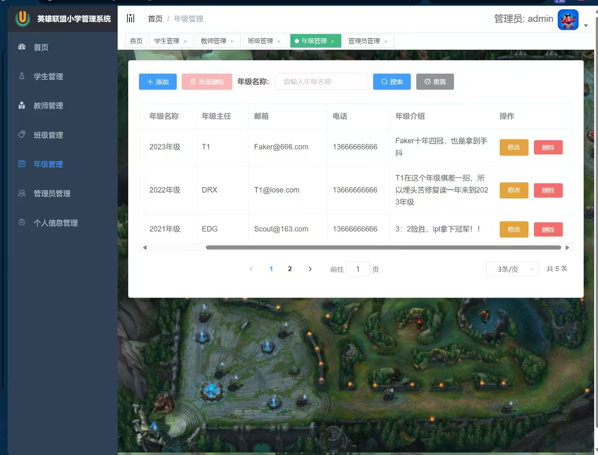
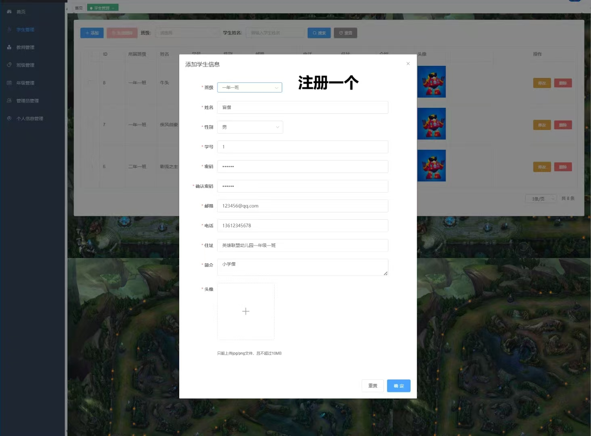
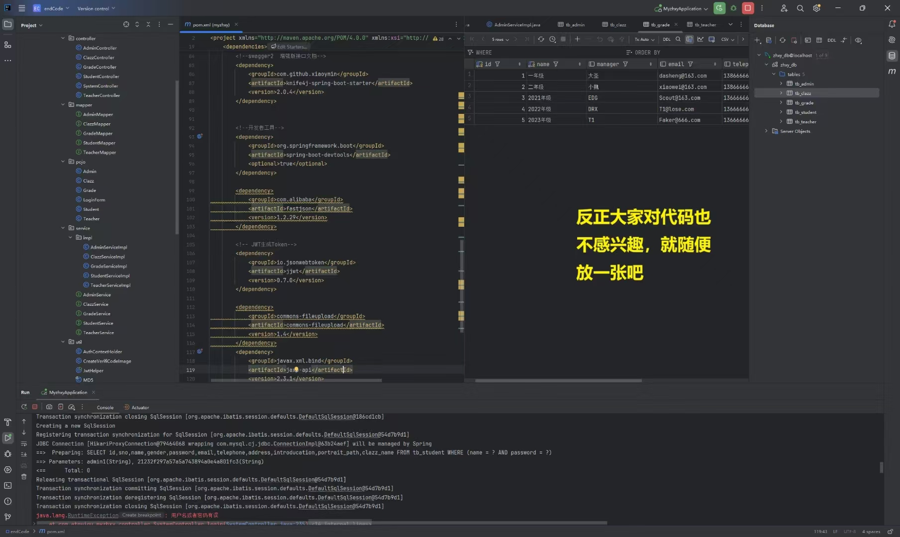
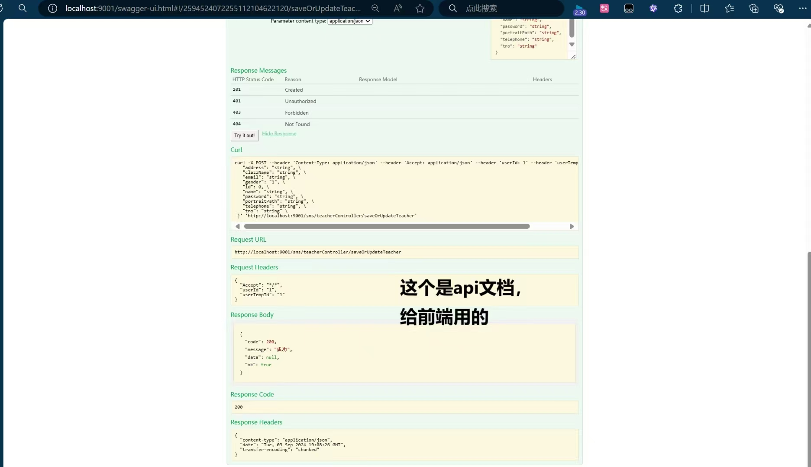

概述
从“能跑起来”到“理解为什么能跑”
对我来说，这个项目的重要性不在于它有多成熟，而在于它是我第一次真正把“后端系统逻辑”从黑箱变成可理解对象的过程。Java SSM 不再只是几个概念，而开始成为一套我能够推理和调试的系统。
原始页面里有一句很准确的话：项目跑通之前很痛苦，跑通之后才真正开始理解。这几乎就是整个过程最贴切的总结。
计算机项目 / 后端
一个以 Java SSM 为核心的项目，重点在增删改查、环境配置，以及第一次真正理解前后端如何协同工作。
概述
对我来说，这个项目的重要性不在于它有多成熟，而在于它是我第一次真正把“后端系统逻辑”从黑箱变成可理解对象的过程。Java SSM 不再只是几个概念，而开始成为一套我能够推理和调试的系统。
原始页面里有一句很准确的话：项目跑通之前很痛苦，跑通之后才真正开始理解。这几乎就是整个过程最贴切的总结。
我学到了什么
这个项目给我的并不只是 CRUD 实践。更重要的是，它让我开始理解前后端职责究竟是怎样连起来的、调试工具为什么重要，以及在产品真正有意义之前，环境配置会如何决定推进速度。
和前端相比，后端仍然更难入门，因为太多关键部分都隐藏在结构里面。但一旦系统跑通，这些原本看不见的东西就会一下清晰很多，后续每一次修改也不再像是盲目试错。
项目反思
这个项目本身规模不算大，但已经足够让我看到下一批真正的问题会从哪里冒出来：更长的文件结构、更多依赖、更复杂的前端逻辑，以及更真实的部署压力。这也正是它值得保留在作品集里的原因。
演示视频
从 `project1` 文件夹整理进来的录屏，作为这个页面右侧媒体区的第一个视频。
界面 01

最能代表这个后端项目界面的截图之一。
界面 02


补充展示系统页面与界面流程的截图。
界面 03


用于说明项目功能完整度的更多界面截图。